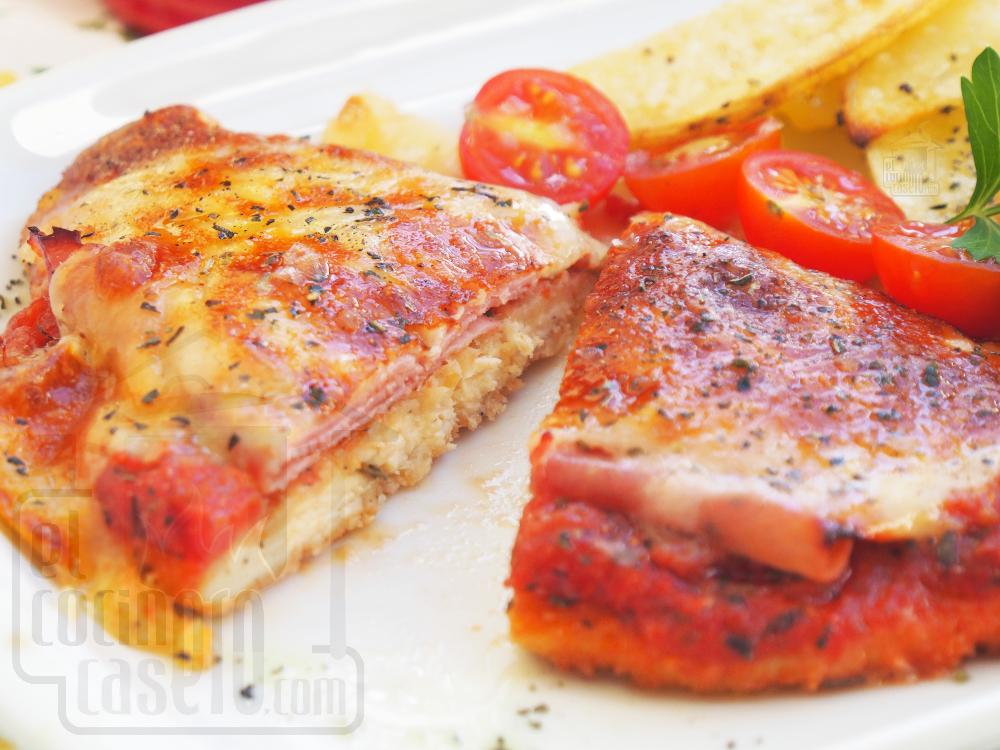

Odin Recipes
Chicken Milanese a la Napolitana

Description
"Chicken Milanese Neapolitan style is a dish that consists of a breaded chicken fillet, covered with tomato sauce, ham, and cheese. It is a traditional Argentine dish and can be prepared easily.
Ingredients
- Chicken (breast): 500 g (8 fillets)
- Cooked Ham: 8 slices
- Shredded Mozzarella Cheese: 200 g
- Crushed Tomato: 16 tbsp
- Oregano: To taste
- Ground Black Pepper: To taste
- Garlic Powder: 2 tsp
- Extra Virgin Olive Oil: As needed
- Salt: A pinch
- Eggs: 1
- Bread Crumbs: For breading
Steps
Preparing the Chicken and Breading
This stage focuses on getting the chicken ready for cooking.
- Season the chicken breast fillets with salt and pepper.
- Place bread crumbs in a wide container.
- Beat the eggs in a separate bowl.
- Preheat the oven to 180°C (350°F).
- Dip the chicken fillets in the beaten egg.
- Allow excess egg to drip off.
- Place the egg-coated fillets in the bread crumbs.
- Press lightly to adhere the bread crumbs.
Cooking and Preparing the Sauce
This stage involves cooking the chicken and preparing the Neapolitan sauce.
- Grease a baking sheet with olive oil.
- Place the breaded milanesas on the baking sheet.
- Drizzle a little olive oil over the milanesas.
- Bake for about 10 minutes, or until golden.
- Place crushed tomatoes in a bowl.
- Add salt, pepper, garlic powder, oregano, and olive oil.
- Stir well to combine the sauce ingredients.
- Set the tomato sauce aside.
Assembling and Finishing
This stage focuses on adding the toppings and finishing the dish.
- After 10 minutes, remove the milanesas from the oven.
- Flip the milanesas over.
- Top with the Neapolitan sauce.
- Add the cooked ham.
- Add the shredded mozzarella.
- Turn on the oven's grill function.
- Broil until the cheese melts and turns golden.
- Sprinkle with oregano before plating.
- Drizzle with extra virgin olive oil.
- Serve with cherry tomatoes and rosemary fried potato wedges.